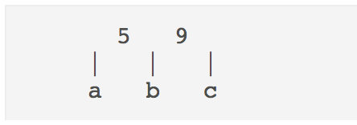
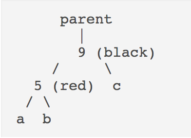

Navigation
A. LLRB Trees
This entire homework will be implemented in RedBlackTree.java. You will not be implementing any 2-3 or 2-4 Tree code for this homework, but may find it useful to reference BTree.java to understand the interface.
You will examine 2-4 trees their relationship to Red-Black trees. Here, we will examine 2-3 trees and their corresponding Left-Leaning Red-Black trees.
2-3 trees are B-trees, just like 2-4 trees. However, each node in a 2-3 tree can have up to 2 elements and 3 children, whereas 2-4 trees could have one more of each (so 3 elements and 4 children). We can come up with a fairly natural Red-Black tree counterpart. However, since we can only have nodes with 1 or 2 elements, we can either have a single black node (for a one-element 2-3 node) or a "section" with a black node and a red node (for a two-element 2-3 node). We can either let the red node be a left child or a right child, so long as we are consistent. However, we choose to always let the red node be the left child of the black node. This leads to the name, "Left-Leaning" Red-Black tree.
Imagine we have the 2-4 BTree:

The corresponding Left Leaning Red Black Tree would look like this:

The advantages of the LLRB tree over the usual Red-Black tree is the ease of implementation. Since there are fewer special cases for each "section" that represents a 2-3 node, the implementation is much simpler.
Normal binary search tree insertions and deletions can break the Red-Black tree invariants, so we need additional operations that can "restore" the Red-Black tree properties. In LLRB trees, there are two key operations that we use to restore the properties: rotations and color flips.
To play around with LLRB trees and view insertions and deletions, check out this website!
B. Rotations and Color Flips
You can find a short conceptual introduction to rotations here . Consider the following tree
parent
|
7
/ \
1 c
/ \
a ba is a subtree with all elements less than 1, b is a subtree with
elements between 1 and 7, and c is a subtree with all elements
greater than 7. Now, let's take a look at another tree:
parent
|
1
/ \
a 7
/ \
b cThere are few key things to notice:
- The root of the tree has changed from 7 to 1.
a,b, andcare still correctly placed. That is, their items do not violate the binary search tree invariants.- The height of the tree can change by 1.
Here, we call this transition from the first tree to the second a "right rotation on 7".
Now, convince yourself that a "left rotation on 1" on the second tree will give us the first tree. The two operations are symmetric, and both maintain the binary search tree property!
Discussion: Rotation by Hand
We are given an extremely unbalanced binary search tree:
0
\
1
\
3
/ \
2 6
/ \
4 8Write down a series of rotations (i.e. rotate right on 2) that will make tree balanced and have height of 2. HINT: Two rotations are sufficient. Highlight the text after this to see the answer. Answer: Rotate left on 0 and then rotate left on 1. The height is now three and the tree is bushy. Make sure to draw it!
Exercise: Rotation Implementation
Now we have seen that we can rotate the tree to balance it without
violating the binary search tree invariants. Now, we will implement it
ourselves! In RedBlackTree.java, implement rotateRight and
rotateLeft. For your implementation, make the new root have the
color of the old root, and color the old root red. Why should we have
the colors change here and what might happen if we did not change the
colors?
Hint: The two operations are symmetric. Should the code significantly differ? Think about what we can reuse.
Color Flip
Now we consider the color flip operation that is essential to LLRB tree implementation. Given a node, this operation simply flips the color of itself, and the left and right children. However simple it may look now, we will examine its consequences later on.
For now, take a look at the implementation provided in RedBlackTree.java.
C. Insertion
Finally, we are ready to put the puzzle pieces together and see how insertion works on LLRB trees!
Say we are inserting x.
- If the tree is empty, let
xbe the root with black color. - Otherwise do the normal binary search tree insertion, and color
xred. - Restore LLRB properties.
Restoring LLRB Properties after Insertion.
First, let's assume that our new node x is the only child of a black
node. That is:
parent (black)
/
x (red)or
parent (black)
\
x (red)Since we decided to make our tree left leaning, we know that the first
tree is the valid form and we will not have to do anything else. If we
end up with the second tree (x > parent) we can simply apply
rotateLeft on parent to get the first tree.
Now, let's consider the case when our new node x becomes a child to
a black node which already has a left child, or a child to a red node.
LLRB have a one-to-one mapping to 2-3 trees. This is like inserting
x into a 2-3 tree node that already has 3 children!
Here, we have to deal with 3 different cases, and we will label them case A, B, C.
Case A: x ends up as the right child of the black node.
|
5(black)
/ \
1(red) x(red)For case A, the resulting section is the same as a 2-3 tree node with one extra element:
|
1 5 xTo fix it, we "split" the 2-3 node into two halves, "pushing" up the middle element to its parent:
|
5 (sibling)
| | |
1 x (nephews)Analogously, for our LLRB section, we can apply flipColor on 5.
This results in:
|
5 (red)
/ \
1(black) x(black)This exactly models the 2-3 node we desired. 5 is now a red node,
which means that it is now part of the "parent 2-3 node section". Now,
if 5 as a new red node becomes a problem, we can recursively deal
with it as we are dealing with x now. Also, the root of the whole
tree should always be black, and it is perfectly fine for the root
to have two black children. It is simply a root 2-3 node with single
element and two children, each with single element.
Case B: x ends up as the left child of the red node.
|
5 (black)
/
1 (red)
/
x (red)In this case, we can apply rotateRight on 5, which will result in:
|
1 (black)
/ \
x(red) 5 (red)This should look familiar, since it is exactly case A that we just examined before! After a rotation, our problem reduces to solving case A. Convince yourself that rotation performed here correctly handles the color changes and maintains the binary search tree properties.
Case C: x ends up as the right child of the red node.
|
5 (black)
/
1 (red)
\
x (red)In this case, we can apply rotateLeft on 1, which will result in:
|
5 (black)
/
x (red)
/
1 (red)This also should look familiar, since it is exactly case B that we just examined. We just need one more rotation and color flip to restore LLRB properties.
Exercise:
Now, we will implement insert in RedBlackTree.java. We have
provided you with most of the logic structure, so all you need to do
is deal with normal binary search tree insertion and handle case A, B,
and C.
Discussion.
We have seen that even though the LLRB tree guarantees that the tree
will be almost balanced, LLRB insert operation requires many rotations
and color flips. Examine the procedure for the insertion and convince
yourself that the insert operation still takes
O(log(n)) as in balanced binary search trees.
Hint: How long is the path from root to the new leaf? For each node along the path, are additional operations limited to some constant number? What does that mean?
Deletion
Deletion deals with many more corner cases and is generally more difficult to implement. For difficulty's sake, deletion is left out of this assignment. You are not expected to complete deletion.
D. Building a LLRB Tree
The following section is entirely optional, but will help your understanding!
To bring every method above together, you will be implementing buildRedBlackTree(BTree.Node<T> r) that builds a Red Black tree that has isometry with given 2-3-4 tree rooted at given node r, and returns the root node. You will have to instatiate the root and build the entire Red Black Tree, using the values provided in the given BTree.
It may be useful to read the provided BTree.java, as stated in part A.
Things to think about:
- What special cases are there? How many elements do they have?
- What does an empty BTree look like?
- With a filled BTree, what node items are we going to create and what recursive calls are we going to make?
E. Submission
You will be required to submit:
- Both rotation functions
insert
Your score will be proportional to the percentage of tests your code passes, rounded to the nearest 25%.
Don't forget to push both your commits and tags for your final submission. As a reminder, you can push your tags by running:
$ git push --tags